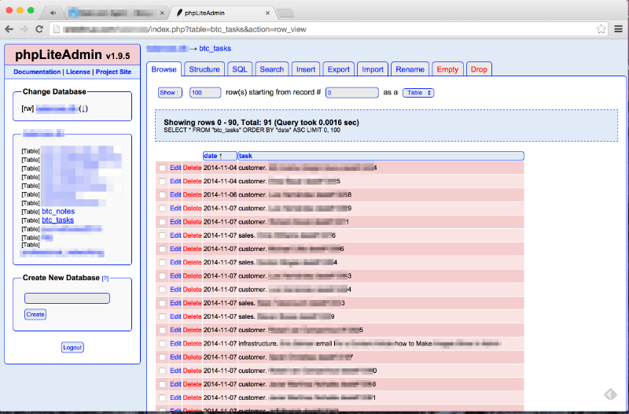
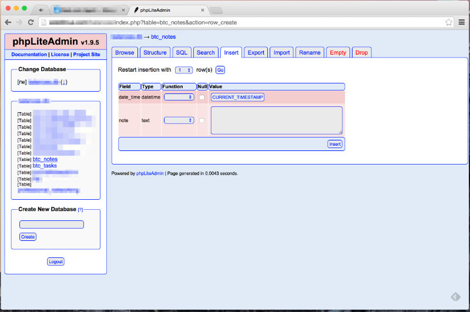
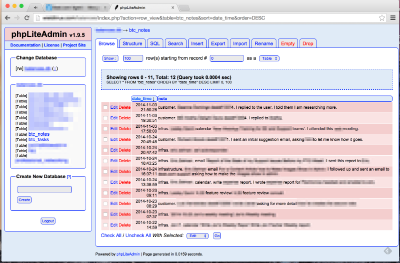

up one level
---
2014-12-09
Using phpLiteAdmin as a Daily Task Tracker and a Work Activity Log
Using phpLiteAdmin as a daily task tracker and a work activity log
On my shared web hosting, both UsingSugarCRM CE as a task tracker and UsingCollabPress as a task tracker were taking thousands of
milliseconds to load the page after each server-refresh-mouse-click.
Now I use phpLiteAdmin which is much quicker. The whole solution is comprised of a tasks table and a notes table.
Here are the table creation schemas:
CREATE TABLE "btc_tasks" (‘date’ DATETIME DEFAULT
CURRENT_DATE, ‘task’ TEXT)
CREATE TABLE "btc_notes" (‘date_time’ DATETIME DEFAULT
CURRENT_TIMESTAMP, ‘note’ TEXT)
On both the tasks and notes tables, I set the date (or date+time) field to use phpLiteAdmin’s date stamp or time stamp functionality.
Here is my work flow:
– Into the tasks table, insert a new task with due date.
– I use the due date to order the tasks– if its an important task I put the date today and if its a secondary task I put it tomorrow or later.
– Screenshot here of the tasks ordered by date ascending:

– From the list of tasks with today’s date I pick the one most important task and work on it.
– To break from a task or to punt it to later, I update the date — either individually or with this SQL query: UPDATE “tasks” SET “date” = ‘2014-10-26’ WHERE “date” = ‘2014-10-25’
– In the notes table along with date+time I insert a note of a task’s progress.
– Screenshot here of the insert note form:

– When I complete a task I delete the task.
– At the end of the week I look at the list of notes. It’s become a report my week’s accomplishments.
– Screenshot here of the notes table ordered by date_time descending:

I use phpLiteAdmin as a daily task tracker and a work activity log. On the same shared hosting it is much faster than were either the CollabPress or the SugarCRM CE installations.
*2015-01-21 edit: previously published at http://w̶i̶e̶l̶d̶l̶i̶n̶u̶x̶.̶c̶o̶m̶/2014-12-09-phpliteadmin-as-task-manager.html
*2015-06-04 edit: edited to fix broken links and clean up white space.
[2020 edit: Moved to: https://i̶n̶v̶e̶s̶t̶o̶r̶w̶o̶r̶k̶e̶r̶.̶c̶o̶m̶/2014/... .html.]